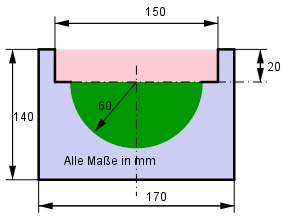

Aufgabe 153 Wie lang wird die dargestellte Rinne, wenn sie aus 1 m3 Beton hergestellt wird?

VRinne = G * l | :G VRinne -------- = l G G = blaues Rechteck - grüner Halbkreis - - rotes Rechteck G = 170 mm * 140 mm - π * 602 mm2/2 - - 150 mm * 20 mm G = 23 800 mm2 - 5 652 mm2 - 3 000 mm2 = = 15 148 mm2 = 151,5 cm3 1 m3 = 1 000 000 cm3 1 000 000 cm3 l = --------------- = 6 600 cm = 66 m 151,5 cm2